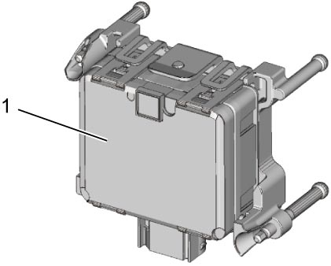

10J
| Description of RBS System Components |
| Component | Description |
|---|---|
| RBS control module |
•RBS control module (1) incorporates a radar sensor and is located behind the radiator grill. The control module judges a potential hazard of the collision sensing the traffic conditions using the radar sensor.
•The radar sensor adopts a millimeter wave radar method and transmits a radio wave from the front of the RBS control module, and measures reflex time of the radio wave from a vehicle ahead. Thus the radar sensor measures the distance, relative speed and direction of the vehicle ahead. Since the radar sensor uses a radio wave, effective detection of a vehicle ahead is possible under the condition of high speed running, at night, in bad weather such as rainy weather or dense fog. •RBS control module communicates with other control module through CAN communication. For CAN communication, refer to Communication System Description:M16A Model, Communication System Description:K14C Model or Communication System Description:D16AA Model. 
 "Expand image") |
| RBS OFF switch |
•RBS OFF switch is installed on the switch bezel of the instrument panel.
•The switch is of a momentary contact type and pushing the button for about 3 seconds switches the system to ON (RBS OFF light: off) or OFF (RBS OFF light: on). •The switch signal is outputted to BCM and RBS control module receives RBS OFF switch signal from BCM through CAN communication. •When ignition is turned “ON” again, the system comes ON (RBS OFF light: off). |
| FAR/NEAR setting switch |
•FAR/NEAR setting switch is installed on the switch bezel of the instrument panel.
•The switch is of a push lock contact type and switches the warning timing to FAR (far distance) or NEAR (short distance).
—FAR: When the switch is not pushed in.
•The switch signal is outputted to BCM and RBS control module receives FAR/NEAR setting switch signal from BCM through CAN communication.—NEAR: When the switch is pushed in. •Even if ignition is turned “ON” again, the state of FAR/NEAR setting switch is maintained. |
| ESP® OFF switch |
•ESP® OFF switch is installed on the switch bezel of the instrument panel.
•When ESP® control is disabled by operating ESP® OFF switch, RBS control module receives ESP® OFF signal and disables RBS control. |
| Steering angle sensor |
•Steering angle sensor is located on the steering column.
•The sensor transmits steering angle signal to RBS control module through CAN communication. |
| Combination meter | Receiving information from RBS control module through CAN communication, combination meter displays various RBS information and sounds a buzzer for the system warning, collision warning, operating condition, etc. and warns the driver of this situation. Refer to Operation Table of Indicator Light / Information Display / Buzzer for further details. |
| ECM | ECM transmits brake light switch signal, accelerator pedal position signal, etc. to RBS control module through CAN communication. |
| BCM |
•BCM transmits RBS OFF switch signal, FAR/NEAR setting switch signal, outside air temperature signal, etc. to RBS control module through CAN communication.
•RBS control module uses outside air temperature signal to judge degree of contamination with snow etc. on millimeter wave radar cover. |
| TCM (A/T model / twin clutch system model) | TCM transmits transmission shift position signal to RBS control module through CAN communication. |
| ESP® control module |
•ESP® control module controls brake pressure and brake light relay receiving information from RBS control module through CAN communication.
•ESP® control module transmits wheel speed signal, yaw rate signal, master cylinder pressure signal, etc. to RBS control module through CAN communication. •RBS control module uses wheel speed signal for a canceling condition on RBS after actuation of RBS. |
| ENG A-STOP control module (M/T model) | ENG A-STOP control module transmits neutral switch status to RBS control module through CAN communication. |